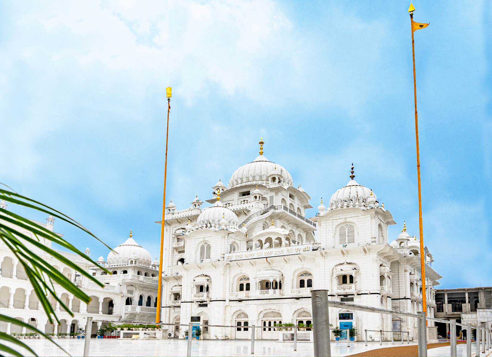
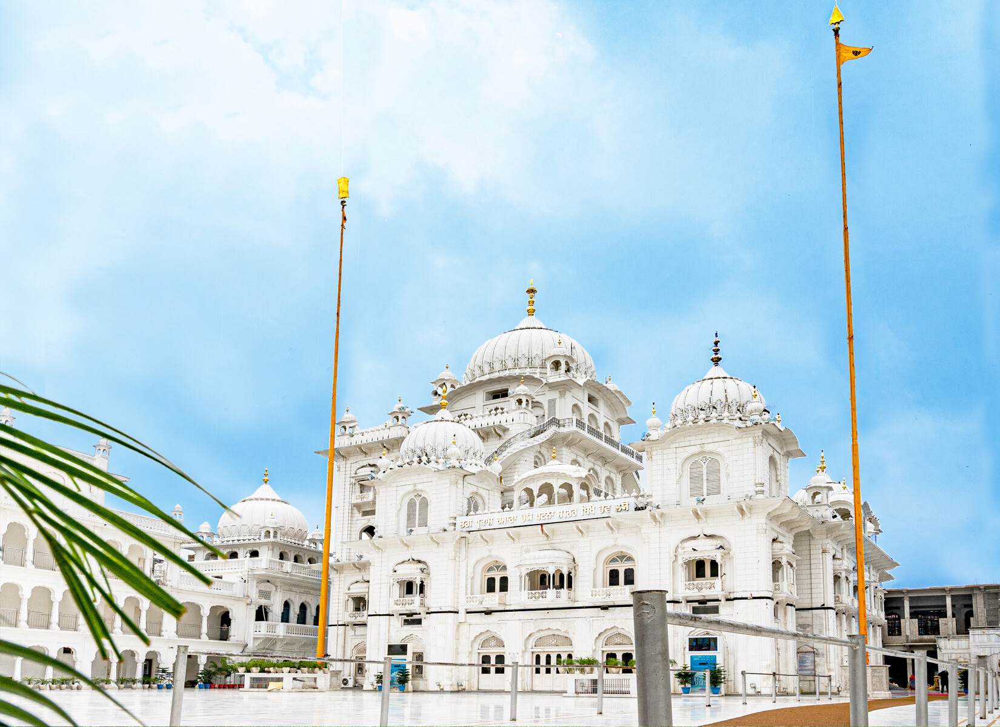

Takhat Sri Harimandir Ji Patna Sahib, also known as Patna Sahib
Gurudwara, stands as one of the five sacred Takhts (seats of authority) in
Sikhism and is revered as the birthplace of the tenth Sikh Guru, Guru Gobind Singh
Ji. Located in the heart of Patna City, Bihar, this magnificent shrine is a
beacon of Sikh faith, history, and architectural brilliance.
The gurudwara was originally built by Maharaja Ranjit Singh in the 19th
century to commemorate the birth of Guru Gobind Singh Ji in 1666. Over the centuries, it has
been lovingly restored and expanded, overcoming challenges like fire and earthquakes, and
today welcomes millions of pilgrims and visitors from around the world.
The spiritual ambiance is heightened by the soulful recitation of Gurbani,
the aroma of incense, and the ever-present tradition of Langar (community
kitchen) that serves free meals to all, reflecting the Sikh principles of equality and
selfless service.
Architectural Splendor
- Blend of Mughal & Sikh Styles: The gurudwara is a marvel of white marble, adorned with gold-plated domes, elegant archways, intricate floral motifs, and finely carved balconies. The central prayer hall is crowned by a majestic gilded dome.
- Serene Courtyards & Sarovar: Open courtyards and a large sacred water tank (Sarovar) offer space for reflection and community gatherings.
- Diwan Hall: Special prayers and gatherings are held in the Diwan Hall, where the Hukamnama (divine order) is read daily.
- Museum: The on-site museum preserves priceless relics of Guru Gobind Singh Ji, including his cradle, weapons, handwritten scriptures, and personal belongings.
Historical & Spiritual Significance
- Birthplace of Guru Gobind Singh Ji: The gurudwara marks the exact spot where Guru Gobind Singh Ji was born and spent his formative years, receiving early education and spiritual training.
- Visited by Sikh Gurus: The site was graced by Guru Nanak Dev Ji and Guru Tegh Bahadur Ji, making it a place of immense reverence.
- Center of Sikh Heritage: The shrine preserves the Jyoti Saroop (eternal flame) and a collection of sacred manuscripts, paintings, and artifacts.
- Festivals: The gurudwara comes alive during Prakash Utsav (Guru Gobind Singh Ji’s birthday), with vibrant processions, devotional music, and religious gatherings.
Visitor Information
- Timings: 4:00 AM to 10:00 PM (Open daily)
- Entry Fee: Free for all visitors
- Langar: Free community meal served throughout the day
- Dress Code: Head covering and no shoes inside the sanctum (scarves and shoe storage available)
- Photography: Permitted in outer premises only
- Best Time to Visit: October to March, or during major Sikh festivals
How to Reach
- By Air: Nearest airport is Jaiprakash Narayan International Airport, Patna
- By Rail: Patna Sahib railway station is nearby
- By Road: Well-connected via NH-31, accessible by bus, taxi, or private vehicle
- Location: Harmandir Gali, Patna City, Bihar – 800008, on the banks of the Ganga River
Patna Sahib Gurudwara is not just a place of worship; it is a living symbol of Sikh spirituality, courage, and heritage. It invites everyone to experience the timeless teachings of Guru Gobind Singh Ji and the enduring spirit of service, unity, and faith.